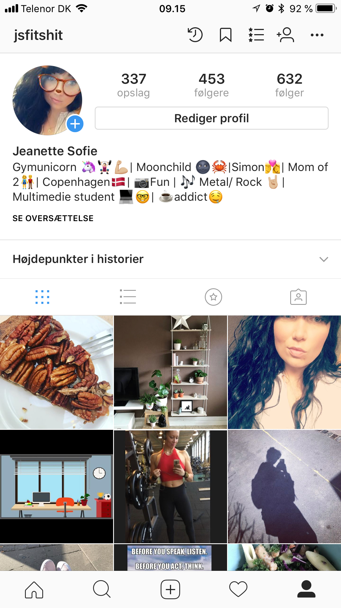

Features og funktionaliteter på Instagram
Mobil features:
- push notifikationer
- lyssensor
- kamera/lyd
- fotos
- kontakter
- offline
Brugs situation:
- følger/ kigger på andre profiler
- liker/ kommenter andres billede/ videoer
- skriver kommentar/pm
- lægger billeder/ video op
- redigere billede/video
- checker ind
Brugs kontekst:
- class="conteckst">
Jeg bruger INSTAGRAM mest når jeg keder mig.
Er i bussen eller toget. Hvis jeg har 10 min til at slappe af i eller npr ungerne bliver puttet.
Android vs. iphone:
minimal forskel
Der er en lille design forskel i menubar ikoner men ellers ingen forskel.
AOF:
Aktiviteret:
Scrolle gennem newsfeddet:
underholdningsværdi.
Objekter:
- Deler billeder/video
- Lægger storys op
- chatter/pm'er
- profil pleje
Features:
- Redigere/sletter billeder eller video.
- Deler billede eller videoer.
- Sender/ modtager/ blokkere
- Rydder op/ sletter